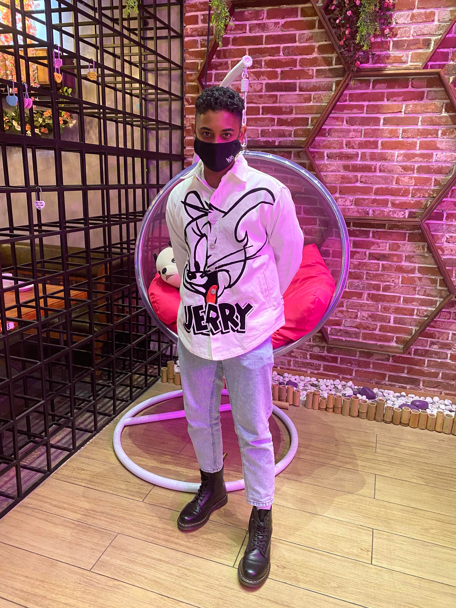

Adrien Aliphon
Assignment 1
About me

A little bit about myself:
- I’m 22 years old, born on the 7th of May 1999
- I was born on a little island called Mauritius. Located in the Indian Ocean but part of West Africa, just off of Madagascar.
- I’m Australian! Moved to Australia about 15 years ago. I celebrate Australian, Mauritian and Chinese culture! My father’s grandfather is from China! So naturally we celebrate all the cultures present in the family.
- I speak both French and English. French being my first language! However, I only speak if I really need to.
- I finished my VCE & Currently going through university. On the side, I’ve done my Lifeguard certificate (Pool), Lab Skills Certificate & started my Personal Training Certificate
- A fact about myself is that I can play the piano! I received a piano for christmas about 5 years ago (I love music and hip hop [Dancing]) and taught myself how to play the piano. I’m also a swimmer & competitive runner.
My Interests in IT
My interest in I.T sparked when my mother first handed me her laptop back in 2007 (Was 8 at the time) whereby I found myself a game called “Runescape” through a google search. I enjoy high fantasy, MMORPG’s and I’ve been an avid gamer since the ripe age of 8. This passion for games continued throughout my teenage years and eventually led to an interest in Game Development. Around the same time I also had an interest in the Army & the Australian Secret Service. Combining both of these interests and their relevant fields I came to one conclusion: Cybersecurity (With the very limited knowledge that I had). Shortly after, La Trobe University released a video in 2017 named “"Inside the Mind of a Hacker: Intro to the Dark Web” which introduced the levels that came with both I.T and Cybersecurity. I was immediately inspired to be a part of this field. As I had my heart set on Information Technology (Cybersecurity), I decided to research a little bit more on which universities were well known for the I.T course. Of course, RMIT came up in both my searches and on forums run by previous students. In the end, RMIT constantly portrayed exactly what I was looking for - Perfect location, a great university culture & people, a great curriculum for learning. Furthermore, I expect RMIT to give me the best possible education I can receive on Information Tech, from the basics to the more advanced sections. I expect to learn how to code, program and ethically hack.

My Ideal Job
My ideal job will have to be in the field of Cybersecurity.
Link here!

Cyber Security Manager:
A cybersecurity manager monitors and overlooks information that flows in and out of an organization's network. In this particular ad for this position, the cybersecurity managers role is to analyze and find solutions to ICT Security Architecture. They are to develop relationships both internal and external, provide guidance and advice to the team they are working with. What stands out to me the most for this job is having the responsibility of developing core security documentation artefacts such as PSPF (The Protective Security Policy Framework) protection of people, information and assets and ISM (Information Security Management).
The skills needed for this job include
- Knowledge in undertaking ICT security compliance
- To be confident, concise, open minded & being able to listen to your team as well as having an understanding of technical language - Having great communication skills.
- Showing both drive and passion for the job achieving the best result with what you’re given to work with.
- Knowledge of Federal government policy.
The skills I currently possess:
- Showing drive and passion for something that I love - I can & will work constantly until I achieve what I expect of myself or what is expected of me
- Confidence, open mindedness and the ability to listen to everyone within a team.
How do I expect to obtain the qualifications, knowledgee & skills
Cybersecurity is a field I would love to get into. At RMIT, I expect to finish my entire degree (Bachelor of Information Technology) & major in “security and cloud computing”. I’m also going to be doing The Master of Cybersecurity at RMIT to further my skills & knowledge in the field. Furthermore, a PhD in Computer Science - Cyber security has been of great interest to me. I expect both RMIT & Other institutions to further my education in this field, however I would also enjoy working & learning on the job as well!
Project Idea
Project idea: MR Home Decor app!
With the new reveal of the Metaverse by Facebook, my project idea is: a mixed reality app that enables new home owners to decorate their rooms/spaces with augmented reality before buying the products. The user will be able to map out their homes (dimensions) accurately using the headsets for individual rooms. In addition to this, companies will be able to list their products to the virtual reality app and customers/users will access those products via a sidebar whilst using the VR headset. A simple drag and drop action will be needed to “place” the product into your home
As we move forward into a more sustainable, clean future the price of furniture is steadily increasing. Furniture IS an investment. 54% of homeowners expect their furniture to last 20 years or more. For this to happen good, sustainable, long lasting materials need to be used. In turn, causing a price surge in good, long lasting furniture & products. With the current global economy, especially after Covid-19, demand for furniture has boomed due to an increased amount of workers working from home & setting up new offices/spaces for work. In Australia, the government recently allowed for a $25k new homeowner grant for those building their first homes, resulting in an increase of new homes being built. The MR App will greatly help those spending money on new furniture in making the right decision without uncertainty.
The MR Home Decor app will include a partnership between furniture companies and the app company. An online account will be needed with details such as Name, Email, Address and Phone Number. Companies that want to sell their products will list their products within the app which will be converted into a fully interactable, 3D model, accessible to all users. In addition to this, the app itself will be able to map out your newly built home & individual rooms as well as window placement. For already established homes (homes with furniture already placed) the user will be able to set their own dimensions of their rooms, resulting in the app “creating” an empty room whereby the floor & walls will be fully customizable to match and mirror the room you want to work with. (The VR portion of my idea).
Furthermore, the listing of products from companies will include:
- Company name
- Price of the furniture
- Delivery times
- Pick up times for smoother transactions at the original store.
- A checkout system for easy buying that will include your details.
A simple drag from the sidebar and “drop” action will be needed to place the selected furniture into your home. Once this has been done, you will be able to rotate the furniture, as long as the user keeps the furniture within the parameters of the room. If the furniture is misplaced (So, out of the selected area accurately measured) it will turn red indicating an error in placement. This is the safety net placed by the MR App to ensure that users place the furniture properly to avoid disappointment in the end product due to human error. The products listed on the MR App sidebar store will have their own dimensions included so “stacking” will be possible. Some products will have a “stackable tag” meaning it will be possible for users to stack said product onto another without issues. Example: Stacking a vase on a side table. Home Decor will warn users when stacking is unsafe by coloring the product ember, again, to reduce disappointment in the final product due to human error.
If companies have the same product in different colours, users will be able to switch between the colours using a color wheel that will pop up when the item is selected. This will also be available once the 3D model of the product is placed within the home. The app will include several information about the products once placed, these include:
- The material of the product
- “How to wash/clean” tag
- What to do to keep the material fresh and new.
Other customization options will include lighting options to see the different furniture and their colours during certain times of the day, based on the window placement in the rooms for most accurate representation of the users homes after buy at different times of day.
The core components for MR Home Decor include a processor, sensors like an accelerometer which measures the change in speed per unit time, a gyroscope which measures the angular velocity, camera, light detection and magnetometer. As my idea also includes a VR portion, a graphics card & CPU will be needed as well as a dedicated head mounted display. The software that will be used for MR Home Decor will be D’Fusion for Augmented Reality and the VR software that will be needed is Unreal Engine 5. A cloud server will also be needed to store and render data.
The skills needed for Augmented Reality App Development include:
- C# and C/C++ programming
- Unreal Engine 5
- Graphical designing skills
- Networking skills
- Software development
- Hardware development skills for dedicated head mounted display
- Java, Java Script
The skills needed for MR Home Decor are possible to achieve with hard work and determination. The software is there to use already, just includes learning. The hardware will be a little but more difficult as it includes its own head mounted display. If successful, MR Home Decor will help individuals choose their furniture appropriately and with more knowledge in terms of aesthetics for their new homes. This will not only save individuals a lot of money in the long run, but also help them decorate their homes using furniture that is not necessarily readily available. In this way, deliveries & pick ups will be a smoother transaction saving both time for the homeowners and businesses/companies that sell furniture resulting in less money and time spent. If my MR App was to be implemented it will help future technology in progressing mixed reality apps.
Personal Profile
Personality Test

Creativity Test

Learning Style Test

The Myer-Briggs test resulted in an Advocate (INFJ-A) personality type. One of the “rarest personality types in the world”, the -A stands for “assertive” - which is of no surprise to me. I have been told that I am an assertive individual - I do what I say I’m going to do and do it well (Or strive to). My overall test results included: Introverted (64%) Intuitive (73%) Feeling (61%) Judging (64%) Assertive (81%). Furthermore, I am listed under the “diplomat” role which means I care greatly for people & connecting with people - When I’m comfortable. It means I’m also willing to cooperate as a team rather than compete with those around me. I would much rather get things done at or above the level of expectation working efficiently with my other team members. I enjoy listening to everyone’s thoughts, opinions and ideas as well as also giving my own thoughts and ideas. I also understand that people are still individuals with different thoughts, ideas and beliefs & that may affect the way they contribute to the team - But I always believe that they’re always trying their best to be helpful & intuitive. People work differently and that’s completely okay! In a team setting I don’t necessarily enjoy being the “leader” - Maybe, not in everything. I think I would enjoy people leading in their strengths when working in a team. Individuals may appoint me as the leader of said team at first - Due to my confidence & assertiveness, however that is not something that I would like to be when working as a team. I think I may help other team members & figure out with the rest of the team all of our personal strengths and weaknesses. In turn, I will be comfortable in the role appointed to me by others or myself, but also be confident that other team members will put in equal effort. I will strive to not be over-assertive, thoughtful & unbiased. With this said, I would try and form a team with different personality traits that can provide a completely different point of view from myself but also have individual characteristics that can help make the team feel “whole”. My 16personalities results of INFJ-A are accurate & eye opening. It has helped me in understanding myself.